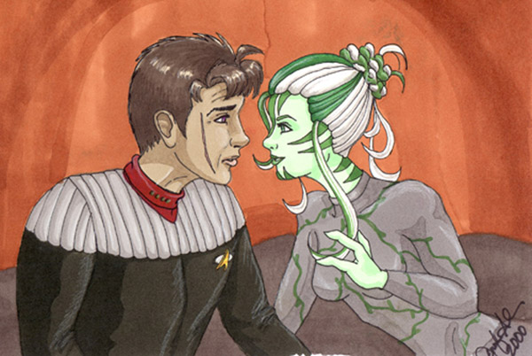

Authors Note: the characters of Star Trek New Frontier are the
property of Paramount and author Peter David, and are used
here without their creators knowledge or permission. Some adult language
and sexual content.
For Jennifer L. Anderson, who sent me all the books. Christmas, 1999.
Aggravation levels 85% and holding.
Mackenzie Calhoun probably wasnt supposed
to see the message on the screen as Burgoyne swiveled it toward Soleta
like
cadets passing notes in the Academy. He saw it anyway, just a quick
glimpse over the Vulcan science officers arm, and had to
hide a grin.
At the foot of the table in the conference
lounge, Elizabeth Shelby went on with her quarterly report, oblivious.
... side trips and other ... distractions
that have been interfering with our assigned goals, she said stiffly.
Several of the crew exchanged half-amused,
half-guilty glances.
Shelby went on. This is the Excalibur,
not the Federation Starship Peyton Place. It would be nice
if we could attend to our
mission with no further --
Bridge to Captain Calhoun.
Mac couldnt hide his smile this time. Calhoun
here.
Soleta turned the screen back toward Burgoyne.
Mac couldnt read what their estimate was up to now, but he privately suspected
the seething Shelby was close to a core breach. Shed been waiting
a long time to let loose with this lecture, not that he expected it to
have much of an effect on the behaviors of his crew.
Captain, the voice continued, were picking
up a distress call from the Cartagena. They say theyre under attack,
but were still
awaiting details.
On my way, Mac said. Commander ...?
Thank you, Captain, Im finished, she grumbled.
Okay, people, to your posts. Mac clapped
his hands briskly. Lets see what weve got here.
Shelby fell into step beside him as he headed
for the bridge. If this is some hoax of yours, Mac --
Eppy! He tried to sound hurt. Do you think
Id fake a distress call -- never mind, obviously you do or you wouldnt
have
brought it up.
I know you dont agree with what I was trying
to do in there.
These are adults. What they do on their own
time isnt my business. Or yours.
Even when it hampers the operation of this
ship?
Nobodys neglecting their duties.
Dammit, Mac! Youre the captain, and it would
help if youd support me instead of sitting there smirking like a teenage
boy!
Im not about to wreck morale by issuing
an abstinence order. The door hissed open and he proceeded onto the bridge.
Weve picked them up on long-range, sir,
Ensign Trask said. He was fresh out of the Academy and nervous as hell.
Put it on. Mac dropped into his chair as
the other officers moved to their usual stations.
The starfield in front of him blinked to show
a riotous orange and red nebula, a sunset in space. In the foreground,
a small starship
was briefly surrounded by a bubble of light as an energy beam deflected
around its shields.
The attacking ship was shaped like an arrowhead,
with a glowing scoop on the back end and a sharp nosecone bristling with
weapons. At the sight of it, Mac muttered a curse under his breath.
Whats that? someone asked.
Infernan raiding cruiser, Mac replied, having
recognized the design from his years as a disreputable galactic lowlife.
And here
Jellico had implied that those experiences would never come in handy
... if the Admiral only knew how wrong hed been! Damn! I
didnt realize we were so close to their system!
Theyve detected us by now but theyre not
backing down, Trask said.
Must be after a good prize if theyre willing
to take on the Federation, Mac said. How long til we get there?
Mark McHenry answered without consulting any
instruments. "Seventeen-point-eight minutes at top warp.
The Cartagenas shields will fail
in nineteen minutes, Zak Kebron rumbled.
Step on it, Mac ordered.
Captain -- Shelby began.
Were cutting it too close for discussion,
Commander. Mr. Trask, see if you can raise the Cartagena, find out
what brought the
Infernans down on them. And standby to send a message to the raiders,
too. His hands tightened on the armrests, anticipation coursing
through his veins. Mixing it up with the Infernans ... it had been
a long time!
Weve got them outgunned, Kebron said.
Mac shook his head. Doesnt matter to these
boys. If they havent turned tail now, theyre not going to unless we hit
them a
telling blow or two.
Kebrons massive knuckles popped like a series
of concussion grenades. Fine by me.
Got the Cartagena, Trask reported.
On the screen, a flickering image appeared,
shot with lines of static. It showed a tiny bridge; the Cartagena
was among Starfleets
smallest classes of ship. The room was choked with smoke from two damaged,
sparking consoles.
Excalibur, this is Lieutenant Hawthorne.
Our captain and first officer are dead. Weve sustained heavy damage.
Hawthorne, like
Trask, was barely more than a kid. His face was chalk-white, freckles
standing out as if hed been peppered with birdshot. His
Adams Apple bobbed as he swallowed. Their first shot took us by surprise,
before we could get our shields up, and -- He was about to
start babbling, voice rising hectically.
Take it easy, Lieutenant! Mac barked. Your
shields will hold until we get there. Have the Infernans made any demands?
The tone of authority calmed the kids nerves
and when he spoke, he was steadier. Yessir, they want our passenger and
her
cargo.
Mac could almost see Hawthornes pleading
hope, the surety that the Excalibur would save the day. A bitter
feeling roiled in his
gut. Hed hate to let them down, but ...
What passenger? Shelby asked crisply.
The Bal ... Ballysor ... Hawthorne floundered
and looked off-screen for help.
The Balisurna Lyrith of Aranaboth, another
voice supplied.
Aranaboth, Soleta said. This Balisurna
is far from home.
We were escorting her to Mnaave, I think
-- Hawthorne broke off in panic as an alarm behind him began to flash
and siren
urgently.
Phaser banks down! someone on the Cartagena
shouted.
Hang in there, Mac said. Were on our way.
Hawthornes image fuzzed out and was replaced
by a scowling Infernan. He was burnt-orange and pebbly-skinned, with short
blunt
yellowish horns ringing his vaguely reptilian face and meeting in a
shallow V just above his glaring triple-lidded cyclopean eye.
Arriving vessel, he said, hissing on the
esses in vessel in a way that made half of Macs crew shiver instinctively,
this is Master --
Ekekessba, Mac cut in. His fists wanted
to clench but he kept them nice and easy, and let a surly smile curl his
lips. The expression
caused the scar along his cheek to tighten like a stitch being drawn
through his flesh. Long time no see.
The Infernans eye narrowed, then he clicked
in the way they showed amusement. Scarskin! Where did you steal a Federation
ship?
Mac sensed his bridge crew looking at him
in varying degrees of speculation and astonishment, but ignored them.
Not stolen. Mine. Im a Starfleet
captain, and if you dont lay off the Cartagena, Im going to turn
you and that junkpile into a puff
of atoms.
You are not in charge here. This is
Infernan space. None of your business.
Thats a Federation ship. Makes it my business.
Ekekessba snarled and made a slashing gesture.
The screen reverted to the view of the battle against the nebula.
Yellow alert, Mac said. Shields up. He
was never one for small talk.
Coming out of warp, McHenry announced. Theyre
moving to intercept.
Turning their back on the Cartagena,
Soleta noted.
Zak Kebron snorted. Were the only threat
now.
Lets prove it. Mac gave a nod, and the
Excalibur
opened fire.
* *
Doctor Selar paid no attention to the occasional
rocking of the ship and the hum and zap of weapons. She had every confidence
that
the battle would soon be over and her work would begin. Her underlings
went about their business of readying sickbay with quiet
professional alacrity.
Lines of lettering, bright amber against the
black screen, unspooled in front of her. With nothing else to do but wait,
she passed
the time reading what little information Starfleet had on the Aranabothians.
There might not be much, she thought, but
what there was certainly was interesting.
Bridge to Doctor Selar.
Yes, Captain.
Infernan ship is on the run. Some presents
headed your way.
Oh, sir, you shouldnt have, she said dryly,
as the air began to shimmer.
She heard the screams before the first patient
fully materialized. The stench of charred meat hit her like a slap. She
didnt
hesitate, just moved toward the body that had appeared on one of the
beds.
It took Selar half a second to make the only
diagnosis that mattered. She dialed her hypospray to the highest setting
and shot a
concentrated burst of painkiller into the womans thigh. The drug put
her out, silenced her screams, and would keep her insensate until her
soon and inevitable death.
Selar turned from her to the next one. Young
Granturean male, on the verge of complete neural shutdown from shock, apparently
unaware that his entire left arm was missing below the elbow. His obsidian
skin had gone waxy from blood loss, the side of his uniform
stained with it.
We must stop the bleeding. Davison, inform
the bridge that wed like to find his arm if at all possible for reattachment.
By the time she finished her examination,
the second wave of wounded were arriving. These ones came on foot from
the direction of
the transporter room, since beaming directly to sick bay was always
a bit more chancy and thus reserved for the most urgent cases. Most of
these suffered blunt impact trauma, the result of being flung about
as their ship was buffeted.
Doctor, a preliminary report? Calhouns
voice asked out of thin air.
One with no chance of survival, she said,
another in critical condition and weve still heard nothing about his
arm. I understand
there is an Aranabothian on board?
So Ive heard, but were still bringing over
the rest of the crew, and Ive got an away team going through the Cartagena
deck by
deck looking for survivors and preparing the bodies of the deceased
for transport to the cargo hold. Why?
Ive uncovered some details that may be of
interest to you. We should discuss them at your earliest convenience.
By the tone of his voice, he was wearing a
wry and humorless grin. I knew this was too easy. He fell silent, and
then the computer
beeped again and she understood that hed adjourned from the bridge
to his small ready-room. Okay, Doctor, let me have it. As long as
were in the Infernans backyard, with my old buddy Ekekessba still
out there, I doubt Im going to get a more convenient time.
Are you familiar with the Aranabothian race?
Never heard of them until today.
I took the liberty of reviewing what little
Starfleet knows. The Aranabothians are pacifists in the extreme. They will
not take violent
action, and do their best to discourage such actions in others. They
are plant-based lifeforms, and like many plants, developed natural
defenses --
Plant-based?
Able to derive nourishment from full-spectrum
lighting and nutrients in soil. They also possess poison spores that act
as both a
respiratory and contact poison, and are fatal to 92% of known lifeforms.
She heard him exhale slowly. So if this Aranabothian
gets upset, our entire ship gets gassed. Does Kebron know this?
He has not yet learned it from me. I wouldnt
worry, Captain.
Why not? Is there an antidote?
Yes, but that is not what I meant. Besides,
given how swiftly death occurs, unless I am on the scene with the antidote
in my hand,
its pointless.
Youre always so reassuring, Selar.
The Aranabothian culture is the best preventative
medicine. At one time, they were as warlike as humans, but the spores nearly
wiped out their entire population.
Now I get it. So they became total pacifists
to prevent it from happening again.
Exactly.
Then it doesnt sound like were in danger.
Id like to share your belief, Captain. However,
I would still recommend quarantine, at least for an initial period.
* *
Energizing, Transporter Chief Polly Watson
said, skimming her hands over the control panel.
Zak Kebron tensed, an action that made him
appear even larger than he already was. Mac wished there was a way to have
done this
without involving his head of security, but he never would have heard
the end of it if hed excluded Kebron.
Two forms appeared amid clouds of swirling,
sparkling molecules. One was Lieutenant Hawthorne, whose expression was
one
of such pathetic gratitude that Mac wouldnt have been surprised to
see the kid burst into tears.
The other had to be the Aranabothian. As she
solidified atop the transporter platform, Mac felt his customary words
of greeting
evaporate right off the surface of his mind. Not to mention any thoughts
of quarantine.
She was his height or even an inch or two
taller, and very slender with subtly feminine curves. Her skin was pale
green with
narrow stripes of a darker hue that marched up from the bridge of her
petite nose, outward across high cheekbones, and down from a pert
little chin.
As near as Mac could tell, those stripes went
all the way down. He couldnt be totally sure because she was encased from
neck to
wrists and ankles in a silvery mesh bodysuit sewn with vinelike meanderings
of tiny crystals. A short garment that seemed part poncho
and part cape hung over her shoulders and came to a point just above
her midriff. A matching skirt reached almost to her knees in front but
on the sides was open all the way to the hip. Both poncho and skirt
were woven of varicolored grasses in a herringbone design, as was the
bulb-shaped basket she held.
Her hair was pure white with streaks of dark green
at the temples and widows peak; she wore it in a piled and coiled style
that
made the streaks twist and weave and reappear. Eyes the color of milky
jade swept calmly around the room before settling on him and
giving him an almost electric jolt.
Captain!
He realized with a start that that was at
least the third time Shelby had tried to get his attention, each time increasingly
irked.
What is it, Commander?
Lieutenant Hawthorne stumbled over to Mac
and clasped his hand, shaking it fervently, almost in tears of relief.
Thank you,
Captain Calhoun, thank you, you saved us, you --
Its all right, he said, trying unsuccessfully
to retrieve his hand. The rest of your crew is already safely aboard --
My crew? Im just --
The highest-ranking officer remaining, Shelby
said. For now, Hawthorne, that puts you in charge. Field promotion.
Mac thought the kid was going to faint.
Hhhhcap-tahn.
Her voice was low and oddly accented, but
Mac had presence of mind enough to see that every male within earshot was
instantly
riveted. Every male and Burgoyne, who had just come in and evidently
forgotten what s/he was going to report at the sight of the
striking visitor.
Even Zak Kebron lost his customary formidable
scowl for a moment.
Shelby and Watson looked at each other and
attained a nearly Betazoid telepathy.
Im Captain Mackenzie Calhoun, Mac said,
stepping forward after divesting himself of Hawthorne. Welcome aboard.
Balisorra,
wasnt it?
She dipped her head toward him politely. Balisurna,
she corrected liquidly. Such is my tie-tle. You would trans-late it as
...
she paused, considering. As She-Who-Is-Most-Pure. Lyrith is my give-en
name.
She-Who-Is-Most-Pure? Mac repeated dubiously.
At her nod, Shelby and Watson both snickered
without amusement. Shelby gave Mac a dig in the ribs with her elbow and
mouthed the word quarantine.
He flapped a hand at her -- yeah, yeah,
in a minute.
Shelby cleared her throat. Excuse me, Balisurna,
but well need to have you accompany our security officer to sickbay. Lieutenant
Hawthorne, the doctor should probably have a look at you, too.
Sure, okay. Hawthorne headed obediently
for the door, would have walked into the wall if Burgoyne hadnt corrected
his
course. The shakes had settled in with a vengeance, and Hawthornes
gaze was wide and blank.
This way, Mac said to Lyrith.
Arent you needed on the bridge, Captain?
Shelby asked coolly.
Im confident that you can handle any crisis
in my absence.
Her glare could have peeled the skin from
his skull. She spun on her heel and stalked out of the transporter room.
The Aranabothian descended from the platform
with the grace of a meadow rippling beneath a summer wind. She made no
sound at
all as she moved, except for the faintest rustle of her garments.
Mac noticed that her feet were bare, ending
in three long toes that she walked upon balanced like twin tripods. She
had three fingers
on each hand as well, no ears that he could see, and when shed spoken
it hadnt looked like she had teeth but instead ridges of hard gums like
those of a snapping turtle.
Zak Kebron stirred as she drew near him. Selar
had pointed out that the Brikar, true to form, were among the 8% of known
races
unaffected by the spores. Though he was such an imposing and impressive
presence that even Klingons had been known to back
down, the Aranabothian glided past him without so much as an apprehensive
glance.
Do you mind telling me what you were doing
on the Cartagena? he asked as they headed for the turbolift.
I am a bear-er of gift, she said, patting
the basket.
Uh-huh, he encouraged.
Lyrith didnt elaborate, lapsing back into
silence.
Whats in the basket? Zak Kebron asked suspiciously
when Mac paused to try to think of how to continue this odd conversation.
Thurrahasla, she said. Waters-clear. She
swallowed part of waters, turning it into a single syllable -- watrs.
A frown crawled across Kebrons stonelike
features, directed partly at her and partly at Mac. Can I see it?
Lyriths head tilted in what Mac assumed passed
for a shrug. She curled the basket against her torso with one arm, lifted
the lid with
her other hand (and gave it to Mac; he accepted it automatically),
and reached inside with her three fingers.
They came up gripping an oval that tapered
to a point on both ends, like an antique Earth football. But instead of
leather and stitches,
it was crystalline and filled with fluid blue light through which white
and indigo moved in currents and waves.
Even poor befuddled Lieutenant Hawthorne stopped
to gaze in awe.
Touch it, Lyrith invited.
Mac reached out, and winced as his wrist was
caught in a vise. No, not a vise, just Kebrons giant fist.
Sorry, Captain. I dont think thats a good
idea. Might be a trap. A bomb.
Lyrith tilted her head again and replaced
the jewel in the basket.
They proceeded to sickbay, where they found
Doctor Selar and her team working industrially to reattach the severed
arm of one of the
Cartagenas crewmen, now that it had finally been found.
Kebron took up a post near the door and did
his best to be both out of the way and inconspicuous, a next-to-impossible
task for
someone built like an avalanche.
The doctor turned the surgery over to her
assistant and approached, smoothing her straight black hair back from her
severely
pointed ears. The Granturean should regain full use of his limb.
Thats good. Doctor, this is the Balisurna
Lyrith. Mac stood back and let them size each other up, the Vulcan with
dispassionate
clinical curiosity, the Aranabothian as placid as a mountain spring.
He decided hed let Selar be the one to broach
the subject of quarantine.
* *
They called it night and dimmed the
lights accordingly.
To Lyrith, it was a foolishness. The will
of space-farers, imposing the names of night and day on the hours as they
saw fit. No
turning world, no gleaming sun to help them tell the difference.
Night. Or third shift.
Either way, the chamber called sickbay was
darkened and quiet. And all but deserted. Aside from herself, held in her
cell, the
only other beings in sight were an unconscious wounded man from the
Cartagena,
and a sleepy female intern leaning over a computer screen.
She sighed with the sound of the wind rustling
in the leaves, and wished for good earth between her toes, for warm radiance
and
cool shade striping her skin.
As neither were forthcoming, she went to the
shelf that held the basket and opened it to remove the Thurrahasla. She
enfolded it in her
six fingers and let her eyes drift closed.
Ah ... yes ... a fast-rushing stream. Bubbling
and frothing over smooth pebbles. Pooling between large flat stones. Cool
and clean as
she dipped her toes into it. Drawing it up into herself, feeling tiny
fish tickling against her skin.
Its pretty.
Lyrith opened her eyes, the vision gone. Now
the only blue she saw was the faint glow at the edge of the force field,
not the dome of a
real sky.
A shadow moved across the opening, looking
at her and at the jewel in her hands as the brilliance faded from it.
Hhhcaptain, she said, struggling with the
unfamiliar word.
You can call me Mac, if you want. Or Mackenzie.
Mhhcen-see, she tried, and turned down
the corners of her mouth. Or not.
Or not, he agreed, turning up the
corners of his mouth.
Shaslitharallis, she said. A bett-er name
for you.
Whats it mean?
Eyes-of-Night-Flowrs.
His face contorted strangely. She still had
much to learn of these humans and their expressions. Was he amused or not?
On my world, she explained, finding it much
easier to talk to only one of them at a time instead of dealing with the
crowds and noise
of the herds they usually moved in, there is a tree that blooms once
in a full turn of the sea-sons. For one night on-ly. When it does, the
flowrs are of that col-or. She indicated his eyes.
Well, you can call me that if you must, but
Id appreciate it if you didnt tell the rest of my crew what it means.
Theyd never let me
live it down.
You do not sleep?
Not tonight. Ive dealt with Ekekessba before.
Wouldnt surprise me if hes still out there, waiting for another chance
to strike.
Now hes got two reasons, revenge, and whatever brought him down on
you in the first place. Mind telling me where you were going?
To Mnaave.
Yeah, thats what Lieutenant Hawthorne said.
Its a desert planet, right?
Not for-ever. She looked down at the glimmering
jewel. This will make Mnaave grow with life. It will be-come green and
thrive. We make this gift to them. But we have no ships to fly the
stars.
So the Federation offered to take you there.
And this thing can terraform -- remake the planet? I can see why the Infernans
would
want it.
Then they should have ask-ed.
He laughed roughly. They dont ask. They
take.
And kill. A great and terrible sadness welled
up inside of her. Death has come be-cause of this. I beg-ged them, let
me go as de-
man-ded, but they re-fus-ed.
The crew of the Cartagena? Damn right
they refused!
Why?
Theyd already lost their captain and their
first officer. Theres no way they would have had their sacrifices be for
nothing and just
handed you over.
Lyrith stared at him, realizing that the same
vast gulf lay between them that her people had encountered many times before.
You do
not un-der-stand. Less hurt would have re-sul-ted.
No, lady, you don't understand. If
youd been turned over to them, the Infernans still would have blown up
the Cartagena. And
your life wouldnt have been worth a bar of fake latinum, either. Even
if they didnt kill you right away, youd sure as hell wish you
were
dead.
That is not im-por-tant. If they re-turn,
I will go.
I dont think so, he said firmly. Not while
youre on my ship. I poked my nose in, and now its my responsibility.
You will take me?
He faltered and blinked at her. Uh ... what?
To Mnaave, you will take me to Mnaave? That
I might fin-ish my bear-ing of the gift?
Oh. He chuckled. Oh, sure. Yeah. Take you
to Mnaave. No problem.
Lyrith nodded. Thank you, Mhhcen-see.
Sorry about the quarantine, he said. Soon
as I can, Ill have the doctor clear you and well get you set up in better
quarters. Its
obvious youre no threat to my crew.
* *
The things that Selar didnt deem worthy of
mentioning!
Elizabeth Shelby snorted in disgust.
It was late and she couldnt sleep, but knew
that wandering down to the bridge would be a bad idea because those on
duty would
either think she was checking up on them or resent her intrusion. Or
both.
So, curious about their spore-gassing passenger,
shed gone into the same files to which Doctor Selar had referred, wanting
to find
out for herself just what she was dealing with.
Now she knew. The Aranabothians were a race
composed entirely of females. Like dryads, tree-nymphs from old Earth
mythology, they could successfully interbreed with a diverse range
of males, but the resultant offspring was always female and always
Aranabothian.
Exotic beauty plus damsel-in-distress passiveness
plus a hint of danger added up to an allure that affected anyone possessing
that
troublesome dowsing-rod of a Y chromosome. No wonder every man
on the ship had just about gawked their eyes out of their sockets!
A small orange light flashing in the corner
of her console drew her thoughts away from snide mental jabs about how
amazing it was
that Mac had gone along with the quarantine.
Shed programmed the ships computer to note
any instances of unusual events, anything that fell outside a pre-set parameter.
Whether
it was a fluctuation in the warp core, an unauthorized transporter
use, even a request for a controlled substance from one of the replicators,
the computer dutifully recorded it for Shelbys later perusal.
Big Sister is watching, she thought, and pressed
a panel that would inform her as to the nature of the event.
Abnormal energy readings coming from one of
the sensor arrays.
Probably nothing, but worth checking out.
At the very least, when she showed up right
as the night-crew were trying to figure it out, theyd be impressed by
her uncanny knack
of knowing when something was going on. Mac had his hunches, but she
preferred to rely on something a little more tangible.
She dressed quickly and went for a stroll.
Now that she had a potential reason to appear on the bridge, she
had no hesitation about
doing so.
Before she could get there, Mackenzie Calhouns
voice burst from the speakers.
Security to sickbay now!!!
Oh, goddammit, Shelby said, reversing her
course and breaking into a run. I should have known!
* *
This is fine, Lyrith said, referring to her
quarantine cell.
Not very comfortable, Mac pointed out. Or
very private.
As he said it, he was conscious of the intern
keeping an idle eye on them. Not close enough to overhear, but she was
bound to report to
Selar that the captain had made an impromptu middle-of-the-night call
on their guest. And Selar, in her peculiarly tactless Vulcan way, would
say something in either Shelby or Kebrons hearing.
The prospect of having to put up with yet
another chewing-out by either (or, with his luck, both) of them
made his head spin. He
wondered if he ought to just go ahead and let Lyrith out, thereby earning
the lecture he was bound to get anyway.
But if he did that, hed have Selar on his
back too, and the three of them at once was more than he could take.
The jewel, he said. When I came in, what
were you doing with it?
I walk-ed. To find watr.
The replicator can give you water. Didnt
anyone demonstrate --?
Not the same. Her lips drew into a pensive
bow as she searched for a word. Cann-ed. Tinn-ed. Flat. Just as this light
-- she
pointed at the overhead fixture, which could be set anywhere from ultraviolet
to full-spectrum, -- is a false sun. It has the ... parts, but
not the ... whole.
Like the difference between synthehol and
the real thing?
Grain juice?
What? Great, now they were both confused.
Hu-mans boil grain in-to juice and let it
go sour, and drink to ad-dle the head.
Not many bars on your planet, I take it.
She shook her head. Shed unbound her hair
and it hung to her waist, the white tinged many colors by the subdued third-shift
lighting.
The green streaks looked to have a different, softer texture. Of course,
he couldnt tell just by looking; hed have to gather up a handful
of
that satiny cascade ...
Mac snapped himself out of it with a rueful
grin.
We have no build-ings on my world, Lyrith
was saying, unaware of his brief side trip into fantasyland. The trees
are sis-ters
and homes to us ...
She trailed off uncertainly.
Whats wrong? He moved closer.
A band of blue-white energy rippled down the
force field, bulging it from within. It crackled all around the edges.
At the same
instant, the dimmed light in the cell blew out with a snapping sound.
The intern sat up straight.
Lyrith backed into a corner of the cell, the
jewel clutched to her chest. A sourceless wind stirred the ends of her
hair.
What --? she asked fearfully.
The rear wall melted and whirled into a black,
gaping vortex. Flame roared through, a fireball pushing a cloud of heated
air in front
of it.
Lyrith cried out and flung an arm across her
face, but the fire never reached her. It churned in on itself and vanished,
and the vortex
remained.
Wormhole? Mac thought, already springing into
action. He slapped his communicator and yelled for security.
An arm shot through the hole. It was brawny
and thick and covered with plated burnt-orange scales, the elbow and knuckles
bristling with horns, a spike where a thumb might be. The arm was quickly
followed by the rest of an Infernan wearing a bronze corselet
and something that looked like a pair of knee-length bloomers made
of studded leather. The effect was ludicrous and Mac would have laughed
if the intruder hadnt gone straight for Lyrith.
No! He lunged, forgetting the force field
until the tremendous, punishing jolt slammed through his body. He rebounded,
stumbled, and only kept his footing by knocking over the startled intern
whod had the bad luck to come up behind him at just that
moment.
Though shed held it protectively to her,
Lyrith did not resist when the Infernan snatched the jewel from her. Nor
did she resist, not
even to try and pull away, when his other hand clamped down on her
slender arm.
Lyrith! No! Stop him! Mac shouted. Spore
him!
She gaped at him as if hed just enthusiastically
suggested they indulge in one of the most obscene and illegal acts in the
entire
quadrant.
Shit! He went for the controls.
Passive resistance was the best she could
do, allowing herself to go slack and dead-weight. It didnt stop the Infernan;
he just
scooped her up and dumped her over his shoulder like a bundle of supple
green reeds.
The doors to sickbay zipped open with a nanosecond
to spare as Zak Kebron came barreling through in answer to Calhouns call.
But he was all the way across the room and a wounded patient as well
as the dazedly-rising physician were between security officer and
captain.
The Infernan moved toward the hole, pausing
only to turn and offer Mac a universally-recognized gesture. Lyrith did
not raise her
head. No imploring entreaty, nothing ... she wouldnt want anyone to
get violent because of her.
Tough.
Mac punched in his override code and the force
field winked out of existence. Kebrons bellow didnt stop him from charging
all-
out after the Infernan as he prepared to step through the hole.
He knew right away he wasnt going to be in
time, and turned his charge into a flying tackle. Heat baked at him, reducing
his eyes to
protesting, watering slits. He felt the solid crunch of his shoulder
driving into the small of the Infernans back, and then they were hurled
together into a turbulent smoky hell.
* *
Shelby burst into sickbay and almost broke her nose
on Zak Kebrons broad back.
The Brikar was standing absolutely still,
except for small tremors that rolled outward from his chest and down his
arms to his
fists, like seismic vibrations spreading out from the epicenter of
an earthquake. He was staring fixedly at an empty and open quarantine
cell, and Shelbys first horrified thought was that he was about to
drop dead from spore inhalation and forget about Selars 8% statistic.
Then she realized that the other security
guard and one of the medical team were up and still drawing breath.
Then she realized that there was no
sign of either Calhoun or the Aranabothian. And that sickbay stank faintly
of smoke. And what
was that awful grinding noise?
The awful grinding noise was coming from Zak
Kebrons jaw. It stopped long enough for him to look at her, register her
presence,
and say, Hes gone.
Computer, locate Captain Calhoun, Shelby
said, though she already knew what shed get by way of reply.
Captain Calhoun is not aboard the Excalibur,
the synthesized female voice said.
What happened? she demanded of Kebron.
He told her. The story sounded nuts, totally
nuts, but the other two reported the same thing.
And they werent beamed out.
She paced, brimming with agitation underscored with worry (and marbled
with irritation; damn
Mac and his rush-to-the-rescue mentality anyway!). Whatever it was,
it mustve been the source of those weird energy readings. Get me
someone from Engineering down here right now, and I want a complete
scan of the area, longest range we can manage.
Soon, sickbay was packed with personnel, both
those shed sent for and others drawn by the ruckus. The word spread like
a forest
fire from one end of the ship to the other, and while everyone was
upset, no one could make a valid claim to surprise. It sure wasnt the
first time something like this had happened.
In a brief lull between having one batch of
orders in the process of being carried out and trying to decide what her
next course of action
should be, Shelby wondered if in another year or so theyd all become
blasé about it. Captains missing? So what else is new?
Doctor Selar showed up looking as fresh and
well-groomed as if she sealed herself in preservative Plasware rather than
go to bed at
night. She moved her remaining patient to a private and quieter locale
before proceeding to question the physician that had been on the scene.
Burgoyne arrived in a slinky robe that left
little of hir figure to the imagination, though if ships scuttlebutt was
to be believed (and
Shelby had no doubts that it was), half the crew was already quite
familiar with said figure.
Kebron simply stood where he was, activity
all around him, like a monolith. Shelby knew that he wasnt going to move
until he
had someplace to go and someone to dismember.
In the end, their investigation came up with
no conclusive results and only a few sensible speculations.
No transporter signal trace of any kind,
Burgoyne said. Best guess is that it was what they say it looked like,
some sort of a
wormhole.
A directable, controllable wormhole? Shelby
chewed on her lower lip. To where?
The Infernan ship?
If they could do that, why bother to attack
the Cartagena in the first place?
It cant be easy to do. They opened that
gateway and kept it open and steady for a lot longer than a transporter
beam would take,
with a target thats moving at a good clip. They know that attacking
the Excalibur would be a wasted effort, so they had to resort to
another tactic. Look. Part of that strange energy reading included
a sensor sweep. Thats how they homed in on our delectable guest. They
set coordinates, made their passageway, and walked right in.
And our shields did nothing. She decided
to let that delectable bit slide.
Because its not really a passageway. Not
really a beam. Two points, but not connected by any sort of straight line.
It didnt have to
get through our shields because it never went anywhere near our shields.
Kebron started grinding his jaw again, and
dispatched security teams to make sure that the rest of the ship wasnt
being invaded.
Im not so much interested in how it works
as where the other end of the tunnel is, Shelby said. Can we pinpoint
it?
Burgoyne shook hir head. Like I said, Commander,
no beam, no particles, nothing we can get a traceback on. Weve got a sample
of
cloth from the quarantine cell that absorbed some of the smoke, so
we may be able to run an analysis and learn something that way --
Do it.
* *
Mhhcen-see?
He did not move.
Lyrith touched him, and recoiled with a gasp
from skin so hot that it turned her fingertips a dry and withered brown.
The human groaned -- alive, at least!
She held her fingers against the coolness
of the Thurrahasla until the pain was gone and they had resumed their normal
coloration.
Hoping that it might help, she pressed the jewel against his forehead.
Water, she thought. Deep and clear.
His breath hitched, then eased into a slow
and regular rhythm. The tension fled his muscles, and the lines of strain
and anger were
smoothed from his face.
Water deep and clear.
He did not look so fierce nor fearsome now.
Handsome ... she supposed the word his kind would use was rugged. Bristles
of dark
hair coarsened his cheeks and chin, rougher than the tangled mass upon
his scalp.
She reached out again, and found that the
dreadful heat was gone. He still felt warm, far warmer than her flesh,
but not to the point
of burning. She dared to switch to her other range of vision again,
the range that showed her the pattern of warmth in all living things.
When theyd first arrived in this lightless
room, all shed been able to see when she looked at him was a blinding
yellow shape. Now
he was back to what seemed normal for a human. Her own hand against
him was a dark blur on a field of dull red.
Seized!
One moment motionless, the next he was up
and had her by the arms.
Sudden fear was instantly smothered by a lifetime
of conditioning. Lyrith went limp, sagging against him.
Lyrith? He realized it almost at once and
released her, but not before she felt the murderous surge of his strength.
He could end her
life and she would defenselessly allow it, for far better that than
to do harm.
She drew herself upright, and picked up the
Thurrahasla. Are you well, Mhhcen-see?
Where are we and howd we get here? What
happened to the Infernan?
You fought, she said with mild reproach.
But there were two.
Two! I thought I heard someone behind me.
Bastard mustve knocked me over the head. He glanced around at the rocky
walls, lit
from behind by tongues of flame that leaped and danced from fissures
in the floor. So they stowed us in this cave. Are you all right?
Yes. You should not --
Dont start with whether I should have or
not. Were here, and weve got to find a way out. Not on a ship. Planetside.
Probably
Inferna, it smells bad enough.
It comes from the stones.
Wheres the water?
There is none here.
But ... He broke off and looked at the jewel
in her hand. I saw a lake, a wide blue lake with trees and clouds reflected
on it. I was
swimming in it, drinking from it.
Lyrith held it out to him. Here is
the lake. The stream. The rain. It pro-tec-ted me from the pas-sage of
fire, and it help-ed you.
Why didnt they take it? He skimmed his
finger across the curved surface.
They did not speak to me. They were anger-ed;
you hurt the one.
Good.
No! To hurt is nev-er good!
If were going to get out of this alive,
that might be our only option.
I can-not.
Theyre probably going to kill us.
I know.
His mouth twisted into a snarl and she let
the resistance drain from her body again as she expected him to start shaking
her. Instead,
he lowered his hands with careful gentleness to rest on her shoulders,
and looked into her eyes.
Lyrith, listen ... as a principle and a goal,
its admirable, but in practice, total non-violence is just as bad as meeting
every
situation
with a sword or a phaser or a fist. There has to be a compromise, a
middle ground. If youd fought the Infernan --
I would have caus-ed his death. Do you not
see, Mhhcen-see?
You can cause deaths by inaction too.
It is not the same.
The hell it isnt.
Are not all lives e-qual? Is it not bet-ter
to yield than let a life be lost?
By throwing away your own life, those of
your friends, your family?
I am sor-ry, she said softly.
He grumbled something in a language that she
did not comprehend, then said, It doesnt have to be all-or-nothing. You
can
defend yourself without killing the other guy --
No. You do not un-der-stand. We can-not stop
it. There is no mid-dle ground with the spores. It is all-or-none.
If we act in an-ger,
they are releas-ed.
So you would rather let yourself be killed
than harm someone else.
Yes. To do less is to be an an-i-mal.
His laugh was bitter. Guess I know what that
says about me.
* *
By the Ssskra! Ak roared, hurling a clay
pot between his sons. It struck the far wall and exploded, spraying thick
reddish
khass. The bickering begins with the crack of a shell and never
ends! I have heard enough!
But he --!
Enough, I say! Ak hefted another
pot and fixed his baleful eye on Ekekessba. You are no longer in the nest
to whet your temper
and fill your belly on the meat of your siblings! Bassaskra?
The taller and leaner of the two bowed deferentially
to the Dmak. Yes, Sire?
Have them brought to me. Send as many kka
as are needed.
Ekekessba subsided into a simmering glower.
I know the musings that must be going through
your mind, Ak said conversationally, pouring himself another potful of
khass.
But if you think that you can bring your teeth to the neck of your
Dmak, I know one youngling in for a nasty surprise.
You might be the surprised one.
Ak clicked a chuckle. I am in my prime! Just
as quick now as I was when I overpowered my father and took his
place. You may
have many battles to your credit, but you have been away from home
too long.
Fighting battles and bringing treasure, while
some stayed behind like cowards and buried themselves in dusty ancient
ways.
Battles like the one you just lost? Chah,
Ekekessba! Soft and weak lifeforms defeat you, and you expect to test yourself
against
me? Go back to the brood-caves and refresh your skills against
adolescents first. Those ancient ways that you scorn were what let your
brother succeed where you failed.
You call this success?
Ak sipped the khass, the hot liquid
scalding a pleasant trail down his throat to warm his gullet. Bassaskra
took prisoners and
treasure and didnt lose a single kka. You scurried back like
a low-crawler, with a ship held together by the seams of its wall-coverings,
many kka dead or injured, empty-handed.
One of his kka was severely beaten,
Ekekessba protested sullenly. And bringing Scarskin Calhoun here was a
mistake. I know
this human. He is too dangerous to be kept alive.
You fear this Calhoun.
I know him, he repeated.
He is a captive on our world, weaponless
and alone, when we have a thousand kka ready at the click of a thumbspike.
Ekekessba blinked his innermost eyelid slowly
and insolently. Youll see.
* *
Mackenzie Calhoun restlessly explored the limits
of his new environment. Pillars of jagged stone. Geysers of fire spouting
from
pools of bubbling oil. Fissures emitting sulfurous gas. Cut-rate vision
of hell, lacking only the pitchfork-toting devils and screams of the
tormented damned.
The only way in or out was an opening blocked
by a large boulder. A few experimental pushes confirmed what his eyes had
already told him -- no way he was going to move that son-of-a-bitch
on his own.
Lyrith sat in the center of the cave, as far
from open flame as she could get. Mac was starting to worry about her.
She looked ...
wilted was the word that came to mind. Even her death grip on
the blue jewel didnt seem to be helping.
He noticed something strange when he went
to check on her, though after he gave it a little consideration, it made
sense. The air
around the Aranabothian seemed fresher, more breathable. At first,
he figured it was because shed chosen a spot away from the gas fissures,
but then he realized that if she was plant-based like Selar said, maybe
she was breathing the more toxic substances and exhaling oxygen.
How are you doing? he asked, hunkering down
near her.
The heat, she said wanly.
Well get out of here somehow.
She wasnt exactly bowled over with optimism
at that.
The boulder grated against stone and began
to roll. Mac stood up, poised for action. But as one Infernan after another
filed through
the opening, he dismissed the urge to wade in swinging.
You boys are taking no chances, he said.
Armed for bear and everybody wearing his special knickers.
The first four spread out to keep him covered.
The second group formed an honor guard around a tall Infernan in a regal
yellow
robe under a scarlet surcoat-thing.
I am Bassaskra, the tall one said. Son
of Ak, Dmak of all Inferna.
Lyrith rose beside Mac. Her triad of fingers
rested lightly on his elbow, and he wasnt sure whether she was seeking
comfort or trying
to warn him out of his violent tendencies.
Im Captain Mackenzie Calhoun of the USS
Excalibur.
Abduction of a Starfleet officer and an ambassador is a big no-no, so
Id suggest you reconsider whatever it is youre up to.
The Dmak has called for you, Bassaskra
said, unimpressed.
If he wants to look at his prisoners, how
about he trundles his scaly orange butt down here in person?
The pressure on his elbow increased a tad,
not nearly enough to hurt and therefore not nearly enough to pay attention
to. Maybe Lyrith
was prepared to walk calmly to her death, but that wasnt the way they
did things on his planet.
Bassaskras eye narrowed, but he kept his
diplomatic tone. The Dmak invites you as guests, not prisoners.
Oh, well that changes everything.
He took Lyriths hand and placed it in the crook of his arm as if taking
her out for a starlight
stroll.
Guards surrounded them. Macs shoulderblades
itched with the awareness that enemies with guns were at his back, but
there was
nothing he could do about it.
Information and time. He needed information,
a look around, the chance to assess opportunities for escape. And time
... time for his
crew to track him down in yet another of Starfleets longstanding tradition
of end-game saves. They wouldnt disappoint.
At the very least, he knew he could count
on Shelby to find him. Eppy wouldnt miss a chance to unleash the full
fury of her
temper on him.
Their escorts didnt seem inclined toward
chit-chat, so Mac devoted his energies to gathering that information.
It wasnt pretty. Inferna was aptly-named.
Barren, volcanic, the sun a vengeful yellow eye in a sky that was red-orange
day and night
because of the nebula that surrounded the solar system. The ground
was grey-brown and lifeless. Sheets of black glass were frozen in
humps and rivers, their edges sharp enough to slash through clothing.
The wind was arid and gritty with ash.
Lyrith blanched beneath the hellish sky and
held onto Mac for support.
In the distance, a cone-shaped mountain reared
against the horizon. Plumes of smoke gushed from its summit.
It occurred to Mac that every Infernan hed
ever known had had an obsessive interest in items of beauty, art in myriad
forms. Hed
always wondered if it was because they were so puke-ugly themselves,
but now he understood. It was their homeworld that was puke-ugly.
The buildings werent much better. Made from
rough-hewn blocks of stone, they were strictly functional.
From the outside, anyway. When Bassaskra led
them inside, the change was dramatic. The thick, windowless walls (whod
want to
take in a view like that?) made the interiors a significant number
of degrees cooler. The halls were adorned to the point of being garishly
cluttered with tapestries, statues, paintings, and so on.
A collector would go wild in here, Mac thought.
The items came from hundreds of worlds, stretching back years upon years.
Seized by the Infernan raiding ships, brought home in an effort to
beautify their wretched hellhole.
It would have been both endearing and funny
if he wasnt being marched along at gunpoint with no plan except his usual
fallback
position of wild improvisation.
They came to a room in which the artwork on
display was really thick, making the spacious chamber seem oppressively
cramped. A table took up most of the remaining space, a hugely heavy
behemoth of a table with a marble-slab top and outward-curving
centipede legs of brass. It could have seated twenty with ample elbow
room, but at the moment, only five places were set and a dubious-
looking feast was laid out.
Two of those places were occupied. At the
head of the table, in a chair that could also properly be called a throne,
a stout Infernan
arrayed in rainbow cloth and enough gold to guarantee his sinking straight
to the bottom if he fell in any body of water larger than a
bathtub was watching them avidly over the rim of a clay pot.
Mac guessed that this must be the Dmak, but
his attention was captured by the Infernan sitting to the Dmaks right.
What do you know. Ekekessba. Running in some
high circles, arent you?
This is the soft-life that youre
so worried about? the Dmak said.
With good reason. Mac showed his teeth,
knowing that these guys took a smile as a threat. He dredged up another
fascinating
factoid from his memory ... their domination ritual involved getting
your foes neck in your teeth.
Some khass? Ekekessba offered with
overdone politeness.
No thanks. He still painfully recalled the
one time Ekekessba had gotten him to try the red liquid. His senses of
taste and smell
hadnt functioned properly for weeks. Khass was a concentrated
extract of pepper-oil that could make a Klingon go crying home to
Mother.
And this is the Aranabothian. The Dmak
flicked the layers of his eyelid at Lyrith. Welcome to Inferna.
I did not choose to come, she said. Why
do you do this? Why do you do harm to bring me here?
Because, fragile-green-one, there is much
you can do for us. He looked pointedly at the jewel nestled in her arm.
Those of Mnaave ask-ed for our help.
Good for them, Ekekessba said. We dont
ask, we take!
See? Mac whispered to her.
My son is right, the Dmak said, startling
Mac -- he hadnt realized that his old adversary was anyone of import.
We are not
Vulcans to frame logical negotiations, not Ferengi to bargain. When
we heard of your mission to Mnaave, we decided to take that treasure
for ourselves. I have just the place for it.
The place? Lyrith asked, puzzled.
Right there. They all followed the Dmaks
thumb-spike, which was indicating a dramatically-lit niche in the wall.
It will look
very nice there.
You would leave the Thurrahasla to look at?
That is not its pur-pose --
Better than giving it to the Mnaavai! They
would have destroyed it! And for what? To bring water, he sneered.
Scuse me, Mac said when Lyrith was unable
to speak, but you dont have much in the way of water either.
I will put it there, where it can be seen
and appreciated. Give it to me now.
She stared at him.
Take it, the Dmak snapped to the nearest
guard.
Mac hopefully held his breath, but Lyrith
only lowered her head dispiritedly as the guard divested her of the Thurrahasla
and
carried it to the Dmak.
Why didnt you stop him? he hissed, knowing
it was a wasted effort.
Ahhh, the Dmak sighed. In his hands, with
their knuckle horns and pebbled scales, the jewel looked fragile as a soap
bubble.
Mac recalled the lake, being immersed in the
fluid silkiness of that cool water, and a pang of loss wrenched at him.
If the Dmak
experienced any similar vision, it didnt show. He gloated over his
prize, then heaved himself from his chair and went over to set it in its
place of honor.
Now what? Mac demanded gruffly. Youve
got what you want.
Not all, Bassaskra said.
Those two little words made the back of Macs
neck prickle.
He took an instinctive step closer to Lyrith.
Oh, yeah?
He will give you too much trouble, Ekekessba
said, swilling from a pot of khass. Just kill him now.
There must not be fight-ing, Lyrith said
softly.
There wont be, Bassaskra assured her, as
long as there is cooperation.
Cooperation! Ekekessba snorted. Weak-talk!
Did we cooperate in the nest, brother? No, it was each for himself!
We
clawed our way to adulthood over the gutted bodies of our siblings!
Our kka do not waste time with these idiotic notions! Except for
you!
Because you do not respect the words of the
ancients is no cause to insult those who do, Bassaskra said. The ways
that you
scorn are the ways that will lead Inferna to a new strength! I have
read it! I have seen it!
Khass-sodden ramblings of the dead!
Ekekessba insisted, clashing his thumbs-spikes together.
The Dmak reached over and slapped Ekekessbas
hands apart. You had your chance and failed! I said that if Bassaskra
won, if
Bassaskra brought me the treasure, I would give him my permission to
follow the will of the ancients. If he is right and the prophecy is true,
it
means much for Inferna. It means that we will be a world to be reckoned
with! We will have unity and power, be able to fight great
wars instead of slinking lizard-quick on raids.
Prophecy? Mac asked loudly, with a sick
sinking feeling.
Bassaskra nodded proudly. The ancients had
many wisdoms. From their writings, I learned to open the portal that let
the kka fetch
you here. And I learned of the Claws of the Ssskra, weapons that will
make our kka invincible soldiers.
What about the prophecy? he prodded grimly.
The ancients wrote that One would be taken
from the dark sky, garbed in the Mantle of Ksask, and --
Hold it! Mac shouted, thrusting his palms
vehemently at the floor. No way. Dammit, one ancient prophecy is enough!
Great Birds
of the Galaxy ... Saviors ... screw it! Ive already been through that
crap!
What are you squeaking about? the Dmak
demanded.
Ekekessba clicked in mirth. You think it
is you, Scarskin? So full of yourself!
Its her, Bassaskra said. The pure
one. The sacrifice.
* *
The kka rushed their charges -- one
placid, one struggling and swearing -- from the room.
Didnt I say this would happen? Ekekessba
inquired of the air at large.
Bassaskra kicked out, but, still blinded,
missed. In that bright instant, he hated his brother with a passion that
he hadnt felt since the
day they hitched themselves over the hardpacked clay edge of the nest
and tumbled down into the care of the females.
It had all happened so fast!
No, their sire said. You claimed he was
dangerous.
Bassaskras pride is injured more than his eye.
Speechless in pain, Bassaskra couldnt contradict.
His eye was awash in a lava pit.
The human had gone berserk. That was the only
possible explanation. Hed listened calmly as Bassaskra related the story
of the
ancients, and then ... unpredictable as a fireflash from the sky!
By the Ssskra, it felt as if his eye was melting!
He could be maimed for life, the last sight hed remember that of a pot
of khass
coming straight at him and then the red flood of the liquid. And his
sire spoke of pride!
* *
Lyrith wept over him in the manner of her people,
dry-eyed but with beads of clear green welling from ducts in the valleys
between her
fingers. Why did you?
Somebody had to, he rasped.
For what good? It chang-ed noth-ing.
Her legs were folded beneath her body, and
his head rested in her lap. The Infernan guards had beaten him, the worst
savagery she
had ever witnessed. The wounds could not have hurt her more if theyd
been her own.
Yet, though his face was swollen and discolored,
though blood leaked from his nose, he wore a hard smile.
Maybe not, but it made me feel better.
This is bet-ter?
Theyre going to kill us. Me first; the only
reason Im not dead already is probably because Ekekessbas trying to convince
his old
man to let him have the privilege.
So you att-ack them for no rea-son.
He rolled his head to the side and spoke as
if he were trying to get a simple concept across to a child. I attacked
them because I
wasnt about to go out without a fight! Dammit, Lyrith ... do you want
to die?
No.
Couldve fooled me!
I do not want to die, Mhhcen-see. But more,
I do not want to harm.
A growl of frustration rose from deep in his
chest. Theres no other way to get out of this. Its us or them. If youd
help,
we might
stand a chance. You have a weapon --
No! It is no wea-pon! It is the worst part
of us, a curse!
Not if youre using it to save your -- hell,
this isnt getting anywhere!
I do not want to spend this last time in
ar-gue-ment.
Fine. Great. He sat up. So we wait here
like good little prisoners until our pal Backassward comes to get you.
Then its on
with the Mantle, up the hill to the monsters lair, and theyll chain
you to a rock like one of those virgins from the old Earth legends.
Yes.
And I bet if you werent She-Who-Is-Most-Pure,
you wouldnt be in this fix.
I do not fol-low.
He slowly sat up, looking at her in a very
peculiar way. How intense were his eyes! The flower shed told him of was
that color, yes,
but feather-soft, and his gaze was not. It was sharp, sharp as a thorn.
Eppy would kick my butt from here to the
Neutral Zone, he muttered.
What?
I cant believe Im thinking this, he said.
But it might be ... no. No, knock it off, Mac, youre out of your skull
for sure this time.
Then again ... there are worse ways to spend your final hours ...
Mhhcen-see, what are you talk-ing a-bout?
He took a deep breath, loosed it in a shaky
self-conscious laugh. This might sound tacky and self-serving as hell,
but ... well ...
if you werent ... pure ... then you wouldnt be a very good
candidate for sacrifice, would you?
She gasped. Are you say-ing --?
I know how it sounds! But ...
That I be-come less pure?!
Funny, shed never seen a humans skin turn
that color before. It was only a thought --
And you would ... would ... vol-un-teer?
I am ap-pall-ed!
Okay, okay, a simple no would have sufficed.
He tried on a lopsided grin and it didnt fit him well.
That I should strike you! she continued,
shaking her head in astonishment.
Lyrith, Im sorry. I havent had a lot of
practice propositioning women. Its usually the other way around. Oh, hell,
that sounded bad
... look, forget it, huh? He made to put a hand over his face, encountered
a lump left by the fist of a guard, and winced.
It is very no-ble of you to off-er, she
said uncomfortably, but I can-not.
Like I said, it was only an idea.
They avoided looking at each other in an awkward
silence. Lyrith mulled over something hed said, and the more she mulled,
the
stranger it seemed, until she had to ask.
You oft-en are re-quest-ed by women to hit
them?
Hit them? No! Why?
You said ...
Wait a minute ... are we talking about the
same thing here? Just what did you think I was volunteering to do?
To have me give you harm. There was no comprehension
in his expression yet, so she went on, and now it was her turn to sound
like someone explaining a simple fact to a child. I am Balisurna.
I have nev-er give-en harm to a liv-ing thing. There are those am-ong us
who gath-er plants, or fish, or drive off pred-a-tors. They are touch-ed
by nec-ess-ar-y im-pur-it-y. I was rais-ed to be most pure and free from
such acts.
He burst out laughing.
What? she asked. If you did not mean for
me to strike you, what?
I was talking about sex!
Sex? she echoed, now utterly baffled. What
of it? I have done that man-y times.
* *
Bassaskra pretended not to listen as Ekekessba
harangued their father.
His eye felt overlarge and tender, and leaked
steady tears from the corners, but the khass had been washed from
it and he could still
see. Hed changed his stained clothes, this time for a plain yellow
tunic in the style of the ancients. Suitable for approaching the Ssskra.
The Mantle of Ksask was folded on a table
behind him. There was no point in delaying. When the Ssskra had accepted
the sacrifice,
when the kka were armed with the powerful Claws, when prophecy
was fulfilled and his own worth was proven, then the Dmak would
surely make him the destined heir.
Ekekessba had to know that. And it had to
rankle, the way a piece of gravel lodged wrong beneath a scale rankled.
For so long, hed
been smugly certain that his raiding ways would win their fathers
favor. It must be a bitter dose of ash-salts to have everything upended,
to see the brother hed always considered weaker and inconsequential
winning.
But for now, Ekekessba only wanted one thing.
Bassaskra was two ways about it. On the one
thumb-spike, it didnt matter to him if his brother gutted Calhoun and
ate his organs
without chewing. Bassaskra had never intended to bring the human here
in the first place, and despite the khass-bath hed taken at
Calhouns hands, didnt care what happened to the man.
But on the other thumb-spike, why allow Ekekessba
the consolation prize of a murder? Hed lost, and should just grit and
swallow. Learn that being out of favor meant not getting everything
he wanted. That, Bassaskra knew, would be a hard lesson for
Ekekessba to grasp, and he might as well get started now.
Still, Calhoun did have to die. Ekekessba
was right about that. They couldnt afford to leave him alive. Bad enough
that Inferna was
already responsible for the deaths of other Federation people. That
would make it a diplomatic hardship when Inferna was ready to take
her place among the respected war-worlds. One more body wouldnt change
that, but having a disgruntled captain out there whod already
proven himself treacherous and revenge-minded ... not a good idea.
So he had to be killed. Did it matter if it
was at the hands of some anonymous kka or Ekekessba himself? Dead
was dead.
Bassaskra! the Dmak called. Calhoun is
your prisoner and you owe him for that attack. What do you want done with
him?
That rankled Ekekessba all the more, having
it be Bassaskras own decision. He savored the dull fury gleaming from
Ekekessbas
eye.
Make his brother ask?
Give Calhoun to him as a gesture of fraternal
solicitude? No, Ekekessba would only see that as a sign of weakness, and
from then
on, Bassaskra would have problems with him. Wanting. Demanding. Trying
to take advantage.
Leave him alive for now, Bassaskra said.
Let him fall to the Claws of Ssskra.
An excellent plan! the Dmak beamed. Tonight,
after the sacrifice, when the favor of the Ssskra is most with us, I will
let all
Inferna know that you, Bassaskra, will rule after me. And then we will
celebrate by showing the kka what the Claws can do to our enemies!
Ekekessba twitched as if he wanted to leap
for the Dmak right then and there, bring his teeth to the neck of his
father and force his
brother to fight.
The Dmak clicked softly, mockingly. Unafraid.
Rather than try such a desperate gamble, Ekekessba
turned and stalked from the room, leaving Bassaskra to finish his preparations
in
peace.
* *
You ... you have? he asked, peering at her
as if seeing her for the first time.
Man-y times, Lyrith repeated. I have man-y
off-spring.
He seemed very bemused. Most places, when
were talking about purity, thats what were referring to.
His face was gradually losing that oddly darkened
hue, but the way he held his body told her that he was not wholly at ease
with this
discussion.
She understood then. Ah! You were sug-gest-ing
that we couple!
The color rushed back in all at once and his
night-flower eyes slid away from hers to look at something else, at anything
else. Well,
you know, if it would have helped ...
I would like to.
There was something wrong with his breathing.
Had the gasses in the cave had reached an intolerable level?
Mhhcen-see?
He reached for the long locks that had fallen
over her shoulders when she leaned toward him in concern. He gathered up
the strands
and rubbed them as if fascinated by the texture.
We do have until sundown, he said, still
without meeting her eyes.
They were both sitting cross-legged, facing
each other. Lyrith splayed her fingers across his knees, feeling the warmth
of him through
his black uniform pants.

* *
Bassaskra paused warily in the lava-tunnel
outside of the cave.
All of the kka with him knew about
Tkess, who was still in the pain-pits thanks to Calhoun, and most of them
also knew about
how Bassaskra himself had been doused with khass and almost
blinded.
They understood that this was a human who
didnt care if the odds were in his favor or not, and they were all armed
and at the ready.
But their sensible concern was overpowered
by excitement.
The sun was falling, and by the time it rose again,
the kka would have received the Claws of Ssskra. None of them were
going to let one
troublesome human get in the way of that.
The boulder was rolled aside at Bassaskras
command, and the kka proceeded into the cave to stand at alert.
Bassaskra followed, and
surveyed his prisoners.
The Aranabothian betrayed no signs of nervousness.
She stood calmly, accepting of her fate. Meek and mild, and it hadnt even
been
necessary to ensure her cooperation by making threats against her companion.
Her own nature was all the cooperation theyd need.
And if that jewel was any indication of the
treasures of her world, well then, Bassaskra knew what the powerful and
newly
respectable Infernan fleets first stop should be. Great wealth and
timid natives ... it was a wonder Aranaboth hadnt been sacked to the bare
ground long since.
Calhoun was another matter. Although he was
outnumbered nine to one, and did not have so much as a pot to throw, something
in
his eyes made Bassaskras throat go dry. His teeth were bared as if
he couldnt wait to feet Infernan neck-scales between them.
Youre going to have to kill me if you think
youre taking her out of this room, he declared.
Mhhcen-see. The Aranabothian turned to
him with her head tipped to the side. Incredibly, she sounded reproachful.
He held her by the wrist. No, dammit, Lyrith!
I cant let --
Bassaskra jerked thumb-spike toward Calhoun,
and the kka moved in to surround him. He let go of the Aranabothian,
crouched to
thrust his hand between two rocks, and sprang back up. A blade flashed
gold in the firelight, a kka reeled back with a bleeding gash,
and Bassaskra incredulously recognized the weapon as an eating-knife
from the Dmaks table.
When --?!? How --?!?
Didnt matter.
The Aranabothian cried out in horror as Calhoun
plunged into the middle of the kka. Bassaskra was frozen in surprise.
A kka reeled back with a punctured
eye, tripped, and the back of his head hit a jagged stone with a gruesome
cracking-punching
sound. The kkas body seized and jittered, voiding itself before
going limp.
The rest of the kka piled onto the
man, earning more wounds but finally overpowering him. Immobilized and
battered half-senseless,
he still struggled.
Bassaskra reconsidered. Kill him now? He was
clearly too dangerous. Ekekessba had been right. Every minute they kept
him
alive was a minute in which more kka might be attacked.
But, no ... if he didnt save Calhoun for
tonight, some of his standing would slip.
When Bassaskra had heard that Ekekessba left
Inferna a few hours ago, hed first suspected that it was his brothers
way of insulting
him. Ekekessba would rather miss out on the most glorious moment in
Infernan history than witness Bassaskras triumph.
Now, watching this determined human, he couldnt
help wondering if Ekekessbas sudden departure had been based on
something much more prosaic, like self-preservation.
The kka manacled Calhoun, one set around
his wrists and another around his ankles, with a third set joining the
chains of the first
and second sets together.
The Aranabothian took a step toward him, water
dripping from her hands.
Lyrith, he said urgently, meaningfully.
I ... can-not. Her shoulders slumped.
Bassaskra clicked in relief. Bring her. The
Ssskra is waiting.
The kka obeyed, leading her to him.
He shook out the ash-grey folds of the Mantle of Ksask and draped the
heavy fabric over
her slender form.
Head bowed, she followed Bassaskra toward
the lava-tunnel. At the caves mouth, she turned and looked back at Calhoun
where he
lay curled in an in-shell position on the rocky ground.
Lithral, she said. Night-Flowr. That is
what I would have call-ed her. And may-be she would have e-ven had your
eyes.
She smiled at Calhoun as if what shed said
was supposed to both make sense and be comforting. The man stared at her
in blank
incomprehension that turned swiftly to stark shock.
What? he gasped. You ... youre not ...
you cant be --
The rest of his words were drowned out by
the rumble of the boulder being moved back into position.
* *
They thought she was not afraid.
Lyrith found that hard to believe.
How could she not be afraid? The end
of her existence awaited her atop this sheet of volcanic glass baking so
painfully
beneath her feet. The suns final curve was all that remained of the
day. It was time.
Mhhcen-see, she whispered, I am sor-ry.
He would not understand. If she had a year
to explain it, he would still not understand. His mind just could not fit
itself around the
idea that was ingrained nature to her people. Do no harm. Not even
to save a lover, a child, oneself.
Bassaskra stood beside and a bit behind her,
mumblinglingly what she presumed was a speech. Above them, on ridges of
stone
overlooking the flat basin of the one-time cauldron, the Dmak and
hundreds more Infernans waited and watched.
Several yards in front of Lyrith, the plain
of black glass was broken by a fissure, a deep chasm from which steam and
smoke arose.
As the sun vanished and Bassaskra began to speak firmly and surely,
a dusky red glow began to shine from the chasm.
It brightened and intensified, changing from
dusky red to passionate crimson to brilliant scarlet. Then red-orange,
blaze-orange,
brighter and brighter still. The earth began to shake, the sheet of
glass starred with fractures.
Something was rising from the chasm. Rising
from the depths of Inferna.
Lyrith did not want to see, could not look
away.
Rising. Rising.
Impressions ... long sinuous neck, backswept
horns, wings that unfurled in a halo of fire, white-gold claws like scythes
out of legends.
Ssskra! Ssskra! Infernans shrieking with
exultation.
She tried to prepare herself for the invasion
of those claws. It would be over in an instant, an all-consuming instant
in which all the
harm she could ever imagine was compressed and delivered to her.
Sweeping toward her.
Tingling.
Sparkles dancing in a lightstorm all around.
Her body flying apart into countless tiny
pieces.
* *
Bassaskra concluded his speech with ecstatic
victory, the roar of his kkas voices ringing even above the earth-shaking
sounds of
the Ssskras appearance.
The Aranabothian was motionless, her mind
doubtless ripped away by fright.
The Ssskra struck.
But the Aranabothian was not there.
A shimmer of light had taken her place.
Transporter!
And the Ssskra, denied the sacrifice, split
the sky with a screech of rage.
In the instant before all thought ceased,
Bassaskra knew that hed gotten the Claws he always wanted ...
* *
Its a trick, Zak Kebron said. A trap.
Probably, Elizabeth Shelby acknowledged.
But were going to check it out anyway. Stay ready.
I always am.
Watson, anything? Shelby asked, directing
her question into thin air.
Nothing yet, the transporter chief replied
via the computer. A lot of life signs, a lot of activity, but no -- there!
Signal lock!
Directly to the bridge! She glanced around
but everyone had already moved back to leave the space in front of the
command chairs
open and clear.
With a whirring hum, a shower of particles
appeared above the deck and then solidified into a grimy, dusty, hog-tied
figure.
Mac! One look at the bruises and Shelby
called out again, over the uproar coming from the rest of the bridge crew.
Doctor Selar,
youre needed immediately!
He coughed. Im okay. His voice was ghastly
-- dry and papery.
Well let the doctor be the judge of that.
Kebron, the manacles.
He was there before she finished her sentence,
popping the chains. As Macs body straightened out, he groaned and she
could hear
his joints creak and crack.
The same turbulent mix of emotions bubbled
up in Shelby. She wanted to throw her arms around him and tell him how
worried shed
been, and she wanted to plant the toe of her Starfleet-issue shoe square
in the seat of his pants and tell him what a jerk he was.
Wheres ... wheres Lyrith? Mac croaked.
His lips were parched and split.
A raw and horrible silence fell.
Doctor Selar arrived in the middle of it,
paid it no attention, and went to work. Hes badly dehydrated. Injuries
consistent with --
Where is Lyrith? He tried to sit up, but
Selar held him flat with one hand as she continued running the tricorder
over him.
I will sedate you if I must, she informed
him.
Shelby could tell he didnt believe her, but
when he called her bluff, Selar matter-of-factly tagged him with a hypospray
and out he
went.
McHenry looked at Shelby and shook his head.
Im not picking up Aranabothian life signs anywhere on the planet.
* *
He recognized sickbay by the smell even before
he could convince his caked and gummy eyes to peel themselves open. Funny
how they all had that same smell. Medicinal, antiseptic.
Captain? Selar, professionally courteous,
with all the bedside manner of the ships computer.
How long have I been out?
Two days. But I am happy to report that youve
recovered fully from your ordeal.
I feel like crap. Is that your idea of recovered
fully?
She didnt dignify it with a response. Mac
finally did get his eyes open, and turned his head far enough to see that
he was the only
patient.
Tell me what happened.
We received a transmission from an unknown,
unidentified source informing us that you were being held on Inferna. The
transmission included coordinates. Although there was some concern
that it was a trap, Commander Shelby chose to investigate.
Hurray for Eppy, he said weakly. What about
Lyrith?
Selars expression sombered, and if there
was anything more depressing than a somber Vulcan, he had yet to discover
what. Sensors
showed no sign of her whatsoever.
Mac closed his eyes again. Hed known it in
his gut, when the hours had passed and though he hadnt been able to see
the sky from
inside the cave, his internal clock told him it was past sunset. Then
past dawn the next day, and sunset the day after that. No Infernans
coming to kill him, or feed him, or anything. He didnt know if they
had forgotten him or were planning to leave him to starve or what, and
in his frustrated anger, it hadnt mattered.
Dammit, Lyrith, he thought. Why
didnt you --
No good; that line of thinking was as futile
as resisting the Borg. She couldnt, she hadnt, and now
she was gone.
Gone, and so was their daughter, if shed been right about that.
Hed missed out on his sons childhood and
their current relationship was screwed-up at best, and now there was another
one
lost before he even had a chance to figure out how he felt about another
shot at parenthood.
Mac got up. Selar almost launched into a lecture,
took another look at his face, and changed her mind.
Calhoun to bridge, he said.
Eppys voice came back at once, warm and strong.
Good to hear youre up and around, Captain!
Up and around and ready to go, he agreed.
He caught his grin in a reflective surface, saw that it looked more like
a frozen grimace,
and glanced away. Whats our heading?
* *
The Mnaavai were small and quick, none standing
more than four feet tall. They darted and scurried whenever they moved,
because
they were accustomed to expanses of blistering sand broken only by
tufts of brittle grass and cactus.
In time, theyd adapt. And gladly.
The only sand on Mnaave these days was that
of the beaches that lined the lakes and rivers. The brittle grass was a
thing of the past,
replaced by meadows. The cactus remained, but those needled sentinels
were surrounded by fields of wild flowers that had erupted in
magnificent color when the rains came.
With her toes sunk deep in the mud at a streams
edge, Lyrith remembered the absolute astonishment shed felt upon materializing
on a transporter pad.
That astonishment had doubled when a figure
stepped from the shadows and held out a blue crystal, in which the tides
and currents of
a worlds worth of waters were held.
I think this belongs to you, Ekekessba had
said.
He hadnt wanted to explain, embarrassed by
it all, but she had gotten the whole story out of him by the time they
reached
the desert
planet. How his desire to disgrace his brother had outweighed even
his hatred of Calhoun, and so hed contacted the Excalibur with
news of
where theyd find their captain. How, when the starship hadnt shown
up in time to stop the sacrifice, hed done it himself, beaming her out
from right under the Ssskras claws. How hed even, out of pique, stolen
the jewel from the Dmaks hall.
She still didnt know why he had returned
it to her, or why hed taken her to Mnaave to complete her mission. She
suspected that he
himself didnt know.
Eventually, word of the renewal of Mnaave
would spread to other systems. It might even reach a certain Federation
vessel.
Lyrith stroked the bud that swelled on her
abdomen and smiled into the gentle sunlight, and the wind caught the joyful
cries of
Mnaavai at play in the tall grass.
* *
The End.